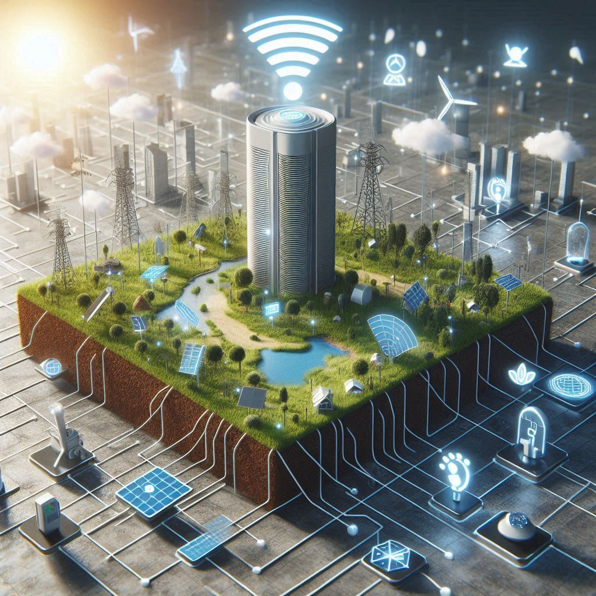
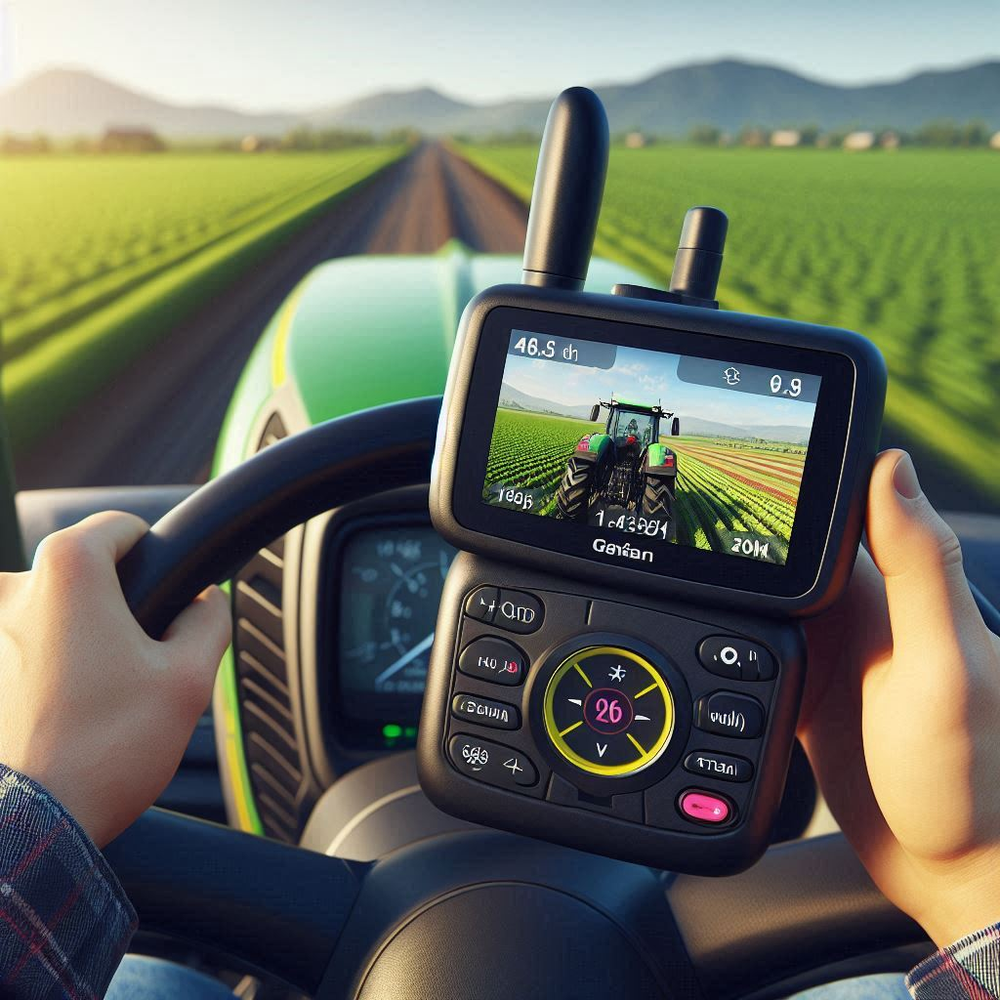
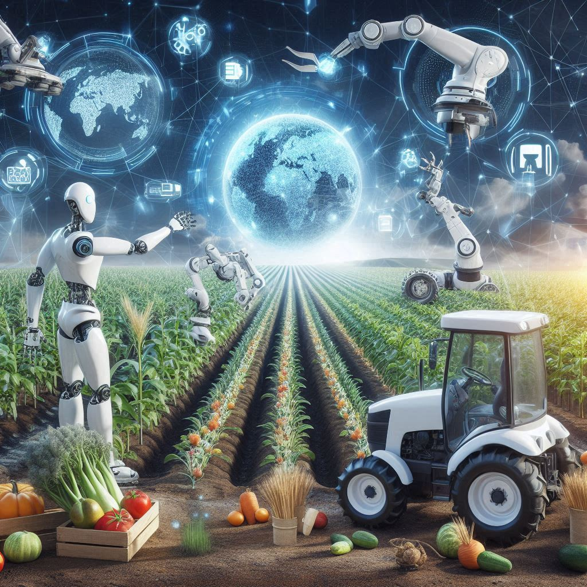

Como funciona a agricultura de precisão ?
E como ela ajuda a cidade e o campo ?

Sensores de solo e clima fornecem dados em tempo real, aumentando a produtividade em até 25% e economizando recursos essenciais.

O uso de GPS e GIS em equipamentos agrícolas garante precisão nas operações, reduzindo custos e aumentando a eficiência das colheitas.


Inteligência Artificial e Análise de Dados